Main Page
Namespaces
Classes
Files
Class List
Class Hierarchy
Class Members
Class Hierarchy
Go to the textual class hierarchy
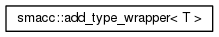
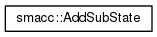
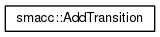
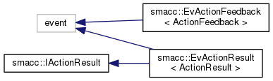
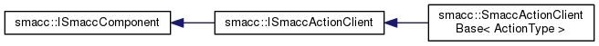
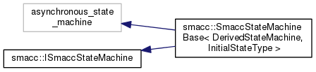
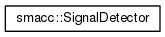
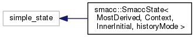
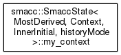
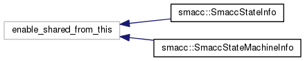
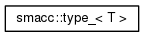
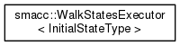
smacc
Author(s): Pablo Inigo Blasco
, Pablo Inigo Blasco
autogenerated on Fri Feb 22 2019 16:05:46